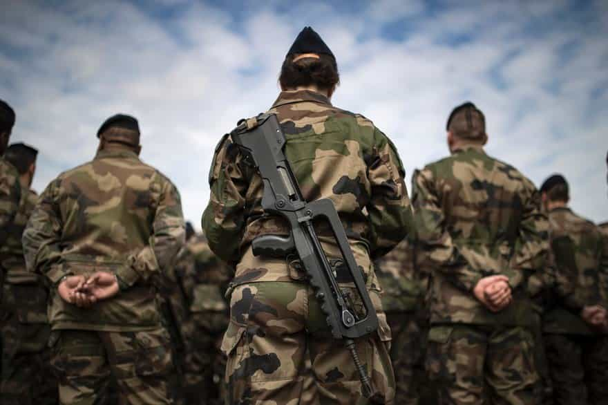
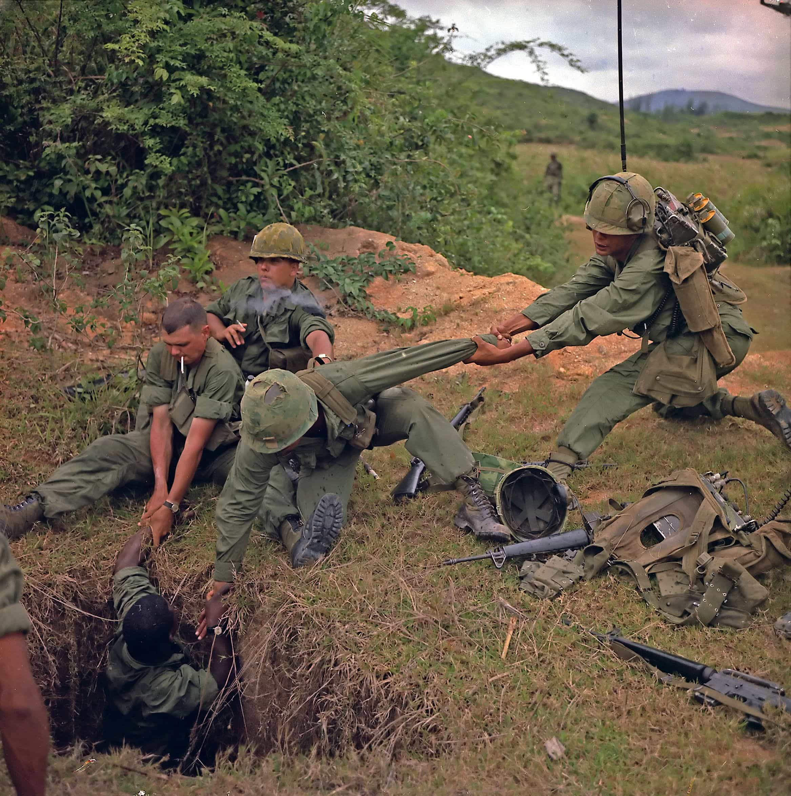
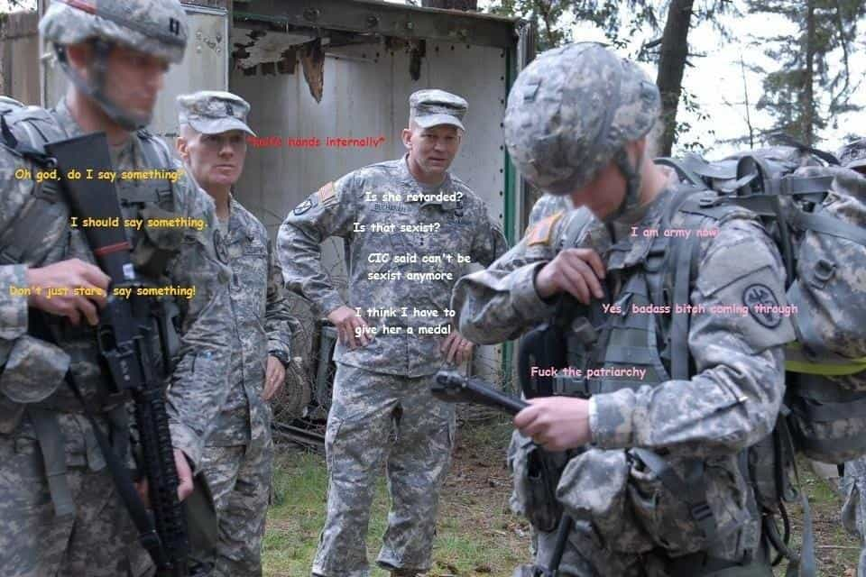

An instructor of the British army may be court martialed after he was filmed yelling at a female recruit during a bayonet course and the video was uploaded on the Forces Bible Facebook page.
The Queen’s Finest are going full circle into cuckery and might sack the instructor for doing his job: put on an act to shout at recruits and prepare them mentally for war.
Women can’t handle basic military training
The instructor’s insults are nothing out of the ordinary. The problem seems to be that the recruit is too fragile to handle words, when the position she trains for might include killing her enemy in the future. She is crying when her comrades did not, therefore the instructor simply states a fact with his “You are fucking weak”.
He also refers to her tongue piercing. I believe the corporal wanted to shout “YOU ARE A SLAG!” but managed to hold back and just yelled that she was “not a killer” instead.
How I noticed that problem with my army experience

My only army experience was limited to a “preparation” lasting a bit less than a month. French students can volunteer for a few weeks in certain units, to see if military life suits them. It is designed to sort the wheat from the chaff. Instructors are specifically told not go easy on the new recruits.
Even in that very short period, I noticed how girls were always lagging behind. A dead weight for the whole unit, they were particularly mediocre in the activities that needed upper body strength, orientation, or hand to hand combat.

One episode that stayed with me was the tunnel. On the obstacle course, a concrete pipe was buried about two yards underground, with a length of fifteen yards and the width of a human body, just like those Viet Cong war tunnels. We had to crawl in it and follow the light to the other end of the tunnel. Even if my reptilian brain told me for a second not to do it, my logical brain analysed that there was virtually no risk of death, to take a deep breath and start crawling.
Out of the seven girls in our group of fifty recruits, three refused to get in the pipe and were sobbing, saying that they could not do it. Out of the four others that succeeded, two needed mental coaching for about five minutes to reassure them before getting in that pipe at a snail’s pace while choking back tears.
Instructors regularly called our mothers whores and us shit-for-brains, faggots or sacks of shit. It was all part of the game and that is what the PC pawns do understand but refuse to accept, because a girl was at the receiving end.
This procedure is needed to harden the spirit and add additional stress to learn to think in a tense situation. But this is what happens daily in armies that are soft enough to recruit women…
What did the soyboys at the Daily Mail expect?
“That army guy was like, so mean! How can you shout at a girl?”
The softies who wrote the news article do not understand that even the instructor knows he is playing a role and uses caricatural lines form Full Metal Jacket (“Show me your war face!”). They only want to punish him for putting in words her inability to be a soldier and that thousands of viewers, especially hardened veterans, probably had a laugh at the expense of the liberals that are forcing women quotas in the military.
These recruits will be sent to war. The role of this instructor, however foul, not politically correct or offensive is necessary. Recruits need rage for bayonet charge and combat. They need to be angry and aggressive to channel adrenaline and kill a potential enemy.
I would be more than pissed if I was a NCO, with years of experience and probably a few deployments under my belt, getting court martialed because daddy’s little treasure with her tongue piercing can’t handle someone screaming at her.
The white knights at the Daily Mail obviously deactivated the comments on their page to prevent any pesky dissenting opinions.
Pas de “grosses” dans les rangs

The deeper the country is into cultural decline, the more cucked and ridiculous its military policies become. Women, by their very nature, have absolutely no place in combat units. And I think 95% of our readers that have served in any army will agree with me.
I won’t detail again why women in the armed forces is a terrible idea, we have written enough about it in the past:
The only solution to meet half way across the bridge, if there was no other alternative, would be to create all-female units limited to administration or first aid.
But after all, British top brass choosing to fire a competent instructor to satisfy a few low-T pen pushers only mildly surprises me. We are talking about the same army that commissioned these adds for recruitment, becoming even more of a global laughing stock:
Read More: “Pro-Communist” Army Officer Could Have Gotten Away With Treason If He Didn’t Brag Online